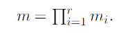
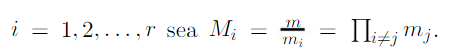
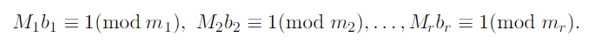
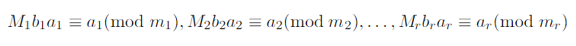
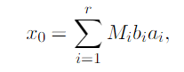
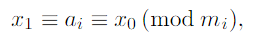
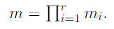

Historia
Sun Tzu (544 a.C.-496 a.C.). Fue Escritor, pensador, político y militar chino, autor del más antiguo y brillante tratado militar. Sun Tzu, procedía del estado de Ch’i y gracias a su libro "el arte de la guerra" adquirió fama entre los señores feudales, en especial para el rey de Wu.
Sun Tzu pudo ser un general chino del siglo V a.C., la época de los Reinos Combatientes, que escribió El arte de la guerra, uno de los libros más antiguos que se conocen y un clásico de la literatura china. El arte de la guerra es un compendio de doctrinas básicas sobre táctica y estrategia militar, basándose en dos principios fundamentales: el engaño y el sometimiento del enemigo sin recurrir a la lucha. El libro ha sido de gran influencia en estadistas posteriores como Maquiavelo, Napoleón o Mao Zedong, y en los últimos años ha tenido gran influencia en la formación de directivos para numerosas multinacionales al transpolar sus enseñanzas al terreno de los negocios.
La obra de Sun Tzu llegó por primera vez a Europa en el periodo anterior a la Revolución Francesa, en forma de una breve traducción realizada por el sacerdote jesuita J. J. M. Amiot. En las diversas traducciones que se han hecho desde entonces, se nombra ocasionalmente al autor como Sun Wu o Sun Tzi. Sun Tzu utilizo El teorema Chino de los restos para ordenar sus tropas.
Teorema
Sean m1, m2, …, mT, enteros positivos primos relativos dos a dos, y sean a1, a2, …, aT enteros arbitrarios. Entonces el sistema de congruencias lineales:
tiene una única solución única módulo
Demostración. Para
Entonces (Mi, mi) = 1 para todo i.
Por el Teorema existen soluciones únicas para las congruencias lineales
para i = 1, 2, …, r. Es decir existen enteros b1, b2, …, br tales que
Por lo tanto,
y si establecemos,
tenemos que x0 ≡ ai (mod mi) para todo i, puesto que Mi ≡ 0 (mod mj) para j ≠ i. En consecuencia, x0 es una solución del sistema de congruencias.
Supongamos ahora que x1 y x0 son dos soluciones del sistema. Entonces
para i = 1, 2, …, r y por el Co rolario concluimos que x1 ≡ x0 mod (mod m), donde
Por consiguiente, la solución es única módulo m.








Referencia
Jiménez L., Gordillo J., & Rubiano G., (2004) Teoria de numeros para principiantes. Bogotá D.C.: Universidad Nacional de Colombia